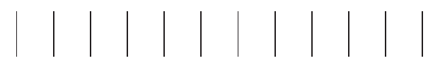
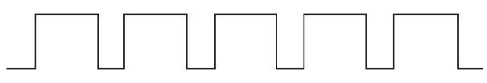

Unit One - Pre-writing exercises - Lesson 1: Drawing lines and patterns
Unit One
Writing is cool... la la lalaaa...
Writing is fun.
Come one, come all, and let’s write.
Pre-writing exercises
Lesson 1
Drawing lines and patterns

